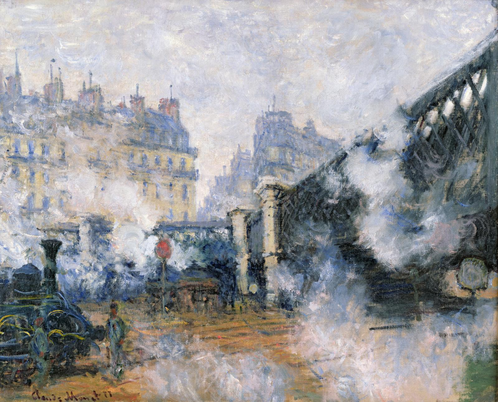

À la recherche du pain perdu
Le dernier numéro t'as capté chakal
Télécharger le PDF
Le dernier numéro t'as capté chakal
Télécharger le PDFNous sommes Nathan Dromard et Matteo Graziano. C’est sur les bancs de la fac de Lettres, entre deux ateliers d'écriture créative, que l'idée a germé. Nous cherchions une plateforme capable d'accueillir non seulement le résultat final, mais l'esprit de recherche propre aux étudiants et aux jeunes auteurs. Faute de la trouver, nous l'avons créée.
OVNI se veut être un laboratoire d'expression libre. Nous croyons que la littérature se vit autant par la création que par la réflexion. C'est pourquoi notre appel est permanent et ouvert à tous : nous souhaitons offrir une tribune à quiconque désire partager son univers, sans distinction de parcours.
Que vous proposiez une création littéraire (roman, poésie, théâtre, jeux typographiques) ou un article critique, nous voulons vous lire. Si votre projet joue avec les mots ou qu'il les analyse, n'hésitez pas. Nous donnons sa chance à chaque voix singulière. N'ayez pas peur de nous surprendre : c'est exactement ce que nous attendons.Un nouveau numéro apparait chaque mois, donc tu as toutes tes chances d'être publié ! Il te suffit simplement de nous envoyer ton texte, et nous nous chargeons du reste. Rien à payer, tout à gagner.
Vous avez une longue phrase complexe à nous soumettre ? Un pastiche ? Notre comité de lecture se réunit quand l'emploi du temps le permet.
Pour nous envoyer vos manuscrits, projets, mots d'amour ou réclamations.
✉ ovni@uphf.fr